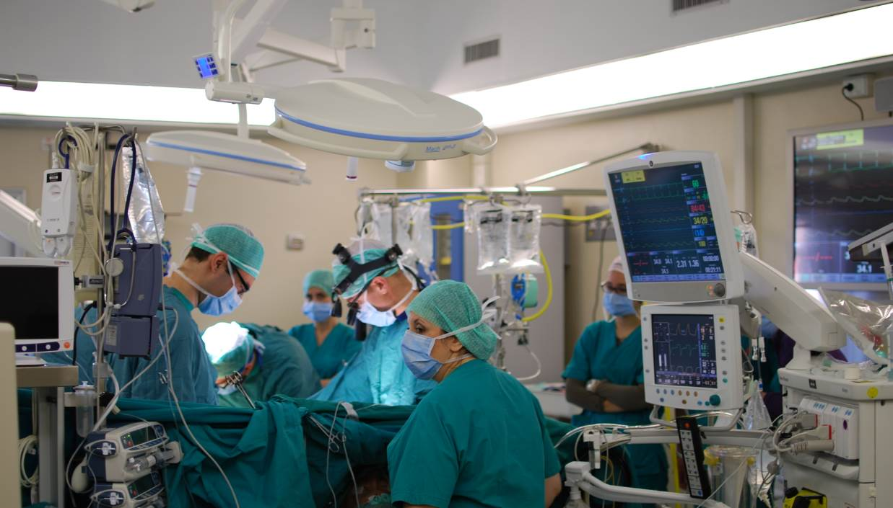
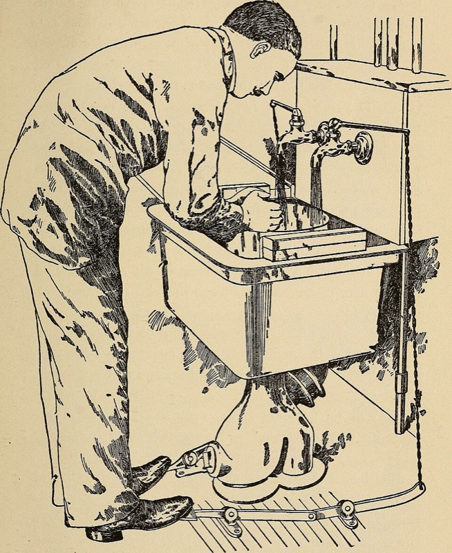

הכרת חדר הניתוח
מגיעים עם מדי חדר ניתוח. סיור בחדר, הצוות, הכנה סטרילית, רשימת הבטיחות. ומה עושה סטודנט כשמשהו משתבש
בסוף הסדנה תדעו
- להתמצא בחדר הניתוח: הציוד, מי עומד איפה ומה התפקיד של כל אחד
- להכין את עצמכם ואת המטופל: לבוש, רחיצה, חלוק וכפפות, הכנת עור וכיסוי
- לשמור על השדה הסטרילי ולדווח מיד כשנפגע
- להכיר את רשימת הבטיחות של ארגון הבריאות העולמי ולהשתתף בעצירה שלפני החתך
- להכיר סיכונים בחדר: חום גוף, שכחת פריטים, שריפה, כוויות מחשמל ומצבי חירום
מה יש בחדר הניתוח?

👆 לחצו על פריט בתמונה כדי לקרוא עליו
תאורה טובה היא חלק מהציוד הבסיסי שחייב לעבוד בכל ניתוח, יחד עם שולחן תקין, מכשירים, מסכים להדמיה, שאיבה ומכשיר צריבה
מקבעים את המטופל היטב ומרפדים את נקודות הלחץ. במטופל עם השמנה ובתנוחת ליתוטומיה יש סיכון לתסמונת מדור בגפיים, לפגיעה עצבית ולפצעי לחץ, במיוחד בניתוח ארוך
מצלמה, מסכים ומנפח גז. מוודאים לפני הניתוח שהכול עובד. תקלה בציוד קורית בעד 38% מהניתוחים עם ציוד זעיר-פולשני. בחצי מהמקרים יש גם טעות אנושית. גז שנכנס לווריד (תסחיף CO2) גורם לירידה פתאומית ב-CO2 בנשיפה ולקריסה
האזור של צוות ההרדמה. בהרדמה (אינדוקציה) ובהתעוררות המטופל בלי רפלקסים מגינים של דרכי האוויר: שקט בחדר וקשב לצוות ההרדמה. בהתעוררות יכולה להופיע עווית של מיתרי הקול. הניטור כולל CO2 בנשיפה: עלייה מתמשכת מעוררת חשד להיפרתרמיה ממאירה
סטרילי. רק מי שלבוש סטרילית נוגע. לפני סגירה סופרים מחטים, פדים ומכשירים. פריט שנשכח בגוף קורה בעד 1 מכל 700 ניתוחים בסיכון גבוה
חלק מהציוד הבסיסי של כל חדר. בדימום פתאומי השדה מתמלא בדם. לכן השאיבה צריכה להיות מוכנה ועובדת לפני החתך
בחדר לחץ אוויר חיובי שדוחף אוויר החוצה ומסננים שמורידים חלקיקים באוויר. אבק, בלגן וחפצים אישיים בחדר הם סיכון לשדה הסטרילי
מי בחדר ואיך מתלבשים
- כיסוי ראש: כל השיער והזקן מכוסים בחדר. השיער נושא חיידקים
- מדים מלוכלכים מחליפים מיד
- בזמן חיטוי העור: מומלץ שרוול ארוך, כי קשקשים מהעור מתפזרים באוויר

מהכיור לחתך

טעות אחת מספיקה
- טכניקה סטרילית היא שיטה שנועדה למנוע כל זיהום מחיידקים. טעות אחת בתהליך יכולה להכניס זיהום לפצע
- היסטוריה: Semmelweis הראה שרחיצת ידיים מצילה יולדות. Halsted הזמין כפפות גומי לכל הצוות
- פגיעה בסטריליות מדורגת לפי מתי שמו לב אליה: מיד (סוג 1) ועד רק אחרי שהמטופל יצא מהחדר (סוג 4)
- רוב זיהומי הפצע (70–95%) נגרמים מהחיידקים של המטופל עצמו. לכן גם הכנת העור חשובה
שלוש עצירות שמצילות חיים
- המטופל מאשר שם, צד, ניתוח והסכמה
- הצד מסומן
- מד רוויה עובד
- אלרגיות
- דרכי אוויר וסיכון לשאיפה
- אובדן דם צפוי של 500 מ״ל ומעלה: עירויים ונוזלים מוכנים
- כל אחד מציג את עצמו בשם ובתפקיד, גם הסטודנט
- מטופל, צד וניתוח
- המנתח: שלבים קריטיים, משך ואובדן דם צפוי
- הרדמה: חששות לגבי המטופל
- אחיות: סטריליות וציוד
- אנטיביוטיקה ב-60 הדקות האחרונות
- ההדמיה מוצגת
- שם הניתוח כפי שבוצע
- ספירות מחטים, פדים ומכשירים
- תיוג הדגימות בקול, כולל שם המטופל
- תקלות בציוד
- מה חשוב להתאוששות
ארבע סכנות שקטות
- ההרדמה פוגעת בוויסות החום. הירידה החדה ביותר בשעה הראשונה
- היפותרמיה: כ-20% יותר דימום, יותר זיהום פצע, תרופות פועלות זמן רב יותר
- מודדים חום ליבה (ב-esophagus במונשם). חום בעור, במצח, באוזן או בפי הטבעת לא מדויק
- חימום באוויר חם. עירוי של יותר מ-1 ליטר בשעה מחממים
- עד 1 מכל 700 ניתוחים בסיכון גבוה
- זו לא רק טעות של אדם: גם תקשורת ונהלים
- ספירות, עצירה לפני סגירה ותחקיר בסוף הניתוח
- משולש האש: חומר בוער, חמצן ומקור הצתה
- יותר מ-600 שריפות בחדרי ניתוח בשנה
- מקור ההצתה העיקרי: מכשיר הצריבה החשמלי
- דגימה שאבדה, מיכל ריק או תווית שגויה
- התוצאה: עיכוב באבחנה, אבחנה שגויה או טיפול בצד הלא נכון
- קוראים את התווית בקול
מה עושה ה"בובי"?
מצבי חירום בחדר ומה התפקיד שלכם
מחקרים שכדאי להכיר
13,301 מטופלים בניתוחי בטן מזוהמים בשבע מדינות. כל הצוות המתרחץ החליף כפפות ומכשירים לפני סגירת הבטן. זיהום פצע ירד מ-18.9% ל-16.0%
NIHR Global Research Health Unit on Global Surgery. Lancet 2022;400:1767-765,788 מטופלים בניתוחי בטן במדינות בהכנסה נמוכה ובינונית. לא נמצא הבדל בזיהום בין כלורהקסידין באלכוהול ליוד במים. גם לא בין תפר עם טריקלוזן לתפר רגיל
NIHR Global Research Health Unit on Global Surgery. Lancet 2021;398:1687-998,485 ניתוחי שברים בגפיים. בשברים סגורים: פחות זיהום עם יוד באלכוהול מאשר עם כלורהקסידין באלכוהול (2.4% לעומת 3.3%). בשברים פתוחים: אין הבדל. שני החומרים מכילים אלכוהול
Sprague S et al. N Engl J Med 2024;390:409-20לפני שנכנסים לניתוח
- מדים נקיים, כל השיער מכוסה, מסכה. אכלתם ושתיתם לפני
- הצגתם את עצמכם לאחות המסובבת ולמנתח. בעצירה לפני החתך: שם ותפקיד
- קראתם את התיק: מה הניתוח, איזה צד, מה הבעיות של המטופל
- אחרי שהתלבשתם סטרילית: ידיים מלפנים, גב לא לשדה. נגעתם? אומרים מיד
- בחירום: שקט, מקשיבים, מבצעים ומאשרים בקול